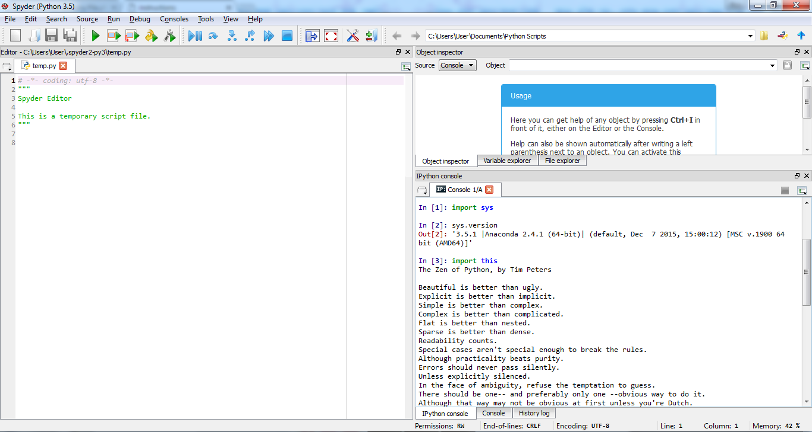

UECM3033 Assignment #1 Report
- Prepared by: Foo Ngai Zheng
- Tutorial Group: T3
Task 1 -- setup a github repository
The reports, codes and supporting documents are uploaded to Github at:
https://github.com/AlferdFoo/UECM3033_assign1
Task 2 -- setup python
Put here the screen shot of file (python.png)

Task 3 -- modify and run Python script
- Hexadecimal representation of 13000981 is 0xc66115.
- System of 10 linear equations.
last modified: 28/01/2016